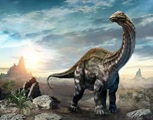
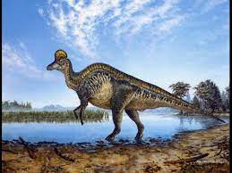
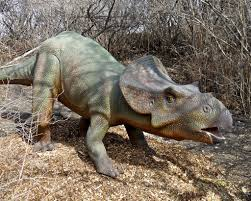
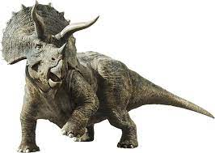
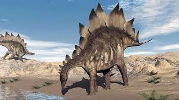

Triceratops (gr. tri-/τρι- ="tres", kéras/κέρας ="cuerno", y -ōps/-ωψ ="cara";"cara con tres cuernos'"), o tricerátops, es un género con dos especies conocidas de dinosaurios ceratopsianos ceratópsidos, que vivieron a finales del período Cretácico, hace aproximadamente entre 68 y 66 millones de años, durante el Maastrichtiense, en lo que hoy es Norteamérica. Es uno de los últimos géneros en aparecer antes del gran evento de extinción masiva del Cretácico-Terciario.Poseía una gran gola ósea que le cubria dorsal y lateral del cuello y tres cuernos, un cuerpo grande sobre cuatro fornidas patas, y varias similitudes con respecto al moderno rinoceronte y los bovinos. Triceratops es uno de los más reconocidos de todos los dinosaurios. También fue uno de los más grandes, de hasta 8 a 9 metros de largo y de 5 a 9 toneladas métricas de masa corporal. Aunque compartiera el territorio con el temible Tyrannosaurus y fuera cazado por él, no está claro si los dos lucharon de la manera representada a menudo en exhibiciones de museo o en imágenes populares.
Aún no se ha encontrado un esqueleto completo de Triceratops, aunque la criatura está bien documentada por numerosos restos parciales recogidos desde la introducción del género en 1887. Se han encontrado especímenes que representan etapas de vida desde la cría hasta el adulto. La función de la gola o volante y de los tres cuernos faciales distintivos ha inspirado largas discusiones. Aunque se vean tradicionalmente como armas defensivas contra depredadores, las últimas teorías proponen que es más probable que estas características fueron utilizadas durante el cortejo sexual y exhibiciones de dominancia, como la cornamenta de los modernos reno, la cabra blanca, o el escarabajo rinoceronte.
Triceratops es el ceratópsido del que los científicos han adquirido más conocimientos, pero la colocación exacta del género dentro del grupo ha sido sin embargo un punto de discusión entre los paleontólogos. Tradicionalmente dentro de los Centrosaurinae, "con volantes cortos", pero los estudios cladísticos modernos muestran que es un miembro de Chasmosaurinae que generalmente tiene "volantes largos·. Dos especies, Triceratops horridus y Triceratops prorsus, son actualmente consideradas válidas, aunque se han descrito muchas otras. Recientes investigaciones parecen apuntar a que el conocido ceratópsido, Torosaurus, representa una forma completamente madura de Triceratops más que un género aparte.Esta opinión ha sido cuestionada y lentamente se la esta dejando de lado. Como el ceratópsido arquetípico, Triceratops es uno de los dinosaurios más populares y ha aparecido en películas, sellos postales y muchos otros tipos de medios.
Era un animal muy grande, el tamaño de los individuos de Triceratops se estima entre los 7,8 a 9 metros de largo y 2,9 a 3 de altura y 5-9 toneladas de masa corporal.Lo más distintivo era su gran cabeza, proporcionalmente una de las más grandes de todos los animales terrestres. Pudo haber medido alrededor de 2 metros de largo,5 y casi podía alcanzar un tercio de la longitud total del animal.Tenía un único cuerno en el hocico, sobre las narinas, y un par de cuernos de aproximadamente 1 metro de largo, sobre cada ojo. En la parte trasera del cráneo tenía una gola ósea (expansión nucal o plataforma craneal posterior) relativamente corta y sin fenestras, a diferencia de la mayoría de los demás ceratópsidos, que tenían grandes aberturas en esta estructura. Un espécimen de T. horridus llamado Kelsey medía de 6,7 a 7,3 metros de largo con un cráneo de 2 metros , medía unos 2,3 metros de altura, y el Black Hills Institute estimó que pesaba aproximadamente 5,4 toneladas.
 |
 |
 |
|  |
 |
 |